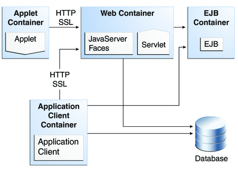
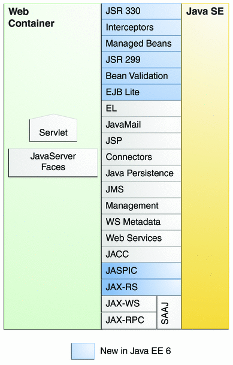
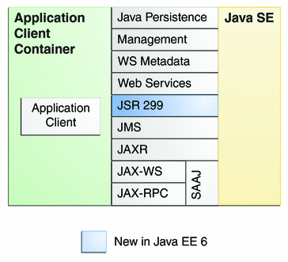

Java EE 6 APIs
Figure 1-7 shows the relationships among the Java EE containers.
Figure 1-7 Java EE Containers
Figure 1-8 shows the availability of the Java EE 6 APIs in the web container.
Figure 1-8 Java EE APIs in the Web Container
Figure 1-9 shows the availability of the Java EE 6 APIs in the EJB container.
Figure 1-9 Java EE APIs in the EJB Container

Figure 1-10 shows the availability of the Java EE 6 APIs in the application client container.
Figure 1-10 Java EE APIs in the Application Client Container
The following sections give a brief summary of the technologies required by the Java EE platform and the APIs used in Java EE applications.
Enterprise JavaBeans Technology
An Enterprise JavaBeans (EJB) component, or enterprise bean, is a body of code having fields and methods to implement modules of business logic. You can think of an enterprise bean as a building block that can be used alone or with other enterprise beans to execute business logic on the Java EE server.
Enterprise beans are of two types: session beans and message-driven beans.
A session bean represents a transient conversation with a client. When the client finishes executing, the session bean and its data are gone.
A message-driven bean combines features of a session bean and a message listener, allowing a business component to receive messages asynchronously. Commonly, these are Java Message Service (JMS) messages.
In the Java EE 6 platform, new enterprise bean features include the following:
The ability to package local enterprise beans in a WAR file
Singleton session beans, which provide easy access to shared state
A lightweight subset of Enterprise JavaBeans functionality (EJB Lite) that can be provided within Java EE Profiles, such as the Java EE Web Profile.
The Interceptors specification, which is part of the EJB 3.1 specification, makes more generally available the interceptor facility originally defined as part of the EJB 3.0 specification.
Java Servlet Technology
Java Servlet technology lets you define HTTP-specific servlet classes. A servlet class extends the capabilities of servers that host applications that are accessed by way of a request-response programming model. Although servlets can respond to any type of request, they are commonly used to extend the applications hosted by web servers.
In the Java EE 6 platform, new Java Servlet technology features include the following:
Annotation support
Asynchronous support
Ease of configuration
Enhancements to existing APIs
Pluggability
JavaServer Faces Technology
JavaServer Faces technology is a user interface framework for building web applications. The main components of JavaServer Faces technology are as follows:
A GUI component framework.
A flexible model for rendering components in different kinds of HTML or different markup languages and technologies. A Renderer object generates the markup to render the component and converts the data stored in a model object to types that can be represented in a view.
A standard RenderKit for generating HTML/4.01 markup.
The following features support the GUI components:
Input validation
Event handling
Data conversion between model objects and components
Managed model object creation
Page navigation configuration
Expression Language (EL)
All this functionality is available using standard Java APIs and XML-based configuration files.
In the Java EE 6 platform, new features of JavaServer Faces include the following:
The ability to use annotations instead of a configuration file to specify managed beans
Facelets, a display technology that replaces JavaServer Pages (JSP) technology using XHTML files
Ajax support
Composite components
Implicit navigation
JavaServer Pages Technology
JavaServer Pages (JSP) technology lets you put snippets of servlet code directly into a text-based document. A JSP page is a text-based document that contains two types of text:
Static data, which can be expressed in any text-based format such as HTML, WML, and XML
JSP elements, which determine how the page constructs dynamic content
JavaServer Pages Standard Tag Library
The JavaServer Pages Standard Tag Library (JSTL) encapsulates core functionality common to many JSP applications. Instead of mixing tags from numerous vendors in your JSP applications, you use a single, standard set of tags. This standardization allows you to deploy your applications on any JSP container that supports JSTL and makes it more likely that the implementation of the tags is optimized.
JSTL has iterator and conditional tags for handling flow control, tags for manipulating XML documents, internationalization tags, tags for accessing databases using SQL, and commonly used functions.
Java Persistence API
The Java Persistence API is a Java standards-based solution for persistence. Persistence uses an object/relational mapping approach to bridge the gap between an object-oriented model and a relational database. The Java Persistence API can also be used in Java SE applications, outside of the Java EE environment. Java Persistence consists of the following areas:
The Java Persistence API
The query language
Object/relational mapping metadata
Java Transaction API
The Java Transaction API (JTA) provides a standard interface for demarcating transactions. The Java EE architecture provides a default auto commit to handle transaction commits and rollbacks. An auto commit means that any other applications that are viewing data will see the updated data after each database read or write operation. However, if your application performs two separate database access operations that depend on each other, you will want to use the JTA API to demarcate where the entire transaction, including both operations, begins, rolls back, and commits.
Java API for RESTful Web Services
The Java API for RESTful Web Services (JAX-RS) defines APIs for the development of web services built according to the Representational State Transfer (REST) architectural style. A JAX-RS application is a web application that consists of classes that are packaged as a servlet in a WAR file along with required libraries.
The JAX-RS API is new to the Java EE 6 platform.
Managed Beans
Managed Beans, lightweight container-managed objects (POJOs) with minimal requirements, support a small set of basic services, such as resource injection, lifecycle callbacks, and interceptors. Managed Beans represent a generalization of the managed beans specified by JavaServer Faces technology. They can be used anywhere in a Java EE application, not just in web modules.
The managed beans specification is part of the Java EE 6 platform specification (JSR 316).
Managed Beans are new to the Java EE 6 platform.
Contexts and Dependency Injection for the Java EE Platform (JSR 299)
Contexts and Dependency Injection for the Java EE Platform (CDI) defines a set of contextual services, provided by Java EE containers, that make it easy for developers to use enterprise beans along with JavaServer Faces technology in web applications. Designed for use with stateful objects, CDU also has many broader uses, allowing developers a great deal of flexibility to integrate different kinds of components in a loosely coupled but type-safe way.
CDI is new to the Java EE 6 platform.
Dependency Injection for Java (JSR 330)
Dependency Injection for Java defines a standard set of annotations (and one interface) for use on injectable classes.
In the Java EE platform, CDI provides support for Dependency Injection. Specifically, you can use DI injection points only in a CDI-enabled application.
Dependency Injection for Java is new to the Java EE 6 platform.
Bean Validation
The Bean Validation specification defines a metadata model and API for validating data in JavaBeans components. Instead of distributing validation of data over several layers, such as the browser and the server side, you can define the validation constraints in one place and share them across the different layers.
Bean Validation is new to the Java EE 6 platform.
Java Message Service API
The Java Message Service (JMS) API is a messaging standard that allows Java EE application components to create, send, receive, and read messages. It enables distributed communication that is loosely coupled, reliable, and asynchronous.
Java EE Connector Architecture
The Java EE Connector architecture is used by tools vendors and system integrators to create resource adapters that support access to enterprise information systems that can be plugged in to any Java EE product. A resource adapter is a software component that allows Java EE application components to access and interact with the underlying resource manager of the EIS. Because a resource adapter is specific to its resource manager, a different resource adapter typically exists for each type of database or enterprise information system.
The Java EE Connector architecture also provides a performance-oriented, secure, scalable, and message-based transactional integration of Java EE based web services with existing EISs that can be either synchronous or asynchronous. Existing applications and EISs integrated through the Java EE Connector architecture into the Java EE platform can be exposed as XML-based web services by using JAX-WS and Java EE component models. Thus JAX-WS and the Java EE Connector architecture are complementary technologies for enterprise application integration (EAI) and end-to-end business integration.
JavaMail API
Java EE applications use the JavaMail API to send email notifications. The JavaMail API has two parts:
An application-level interface used by the application components to send mail
A service provider interface
The Java EE platform includes the JavaMail API with a service provider that allows application components to send Internet mail.
Java Authorization Contract for Containers
The Java Authorization Contract for Containers (JACC) specification defines a contract between a Java EE application server and an authorization policy provider. All Java EE containers support this contract.
The JACC specification defines java.security.Permission classes that satisfy the Java EE authorization model. The specification defines the binding of container access decisions to operations on instances of these permission classes. It defines the semantics of policy providers that use the new permission classes to address the authorization requirements of the Java EE platform, including the definition and use of roles.
Java Authentication Service Provider Interface for Containers
The Java Authentication Service Provider Interface for Containers (JASPIC) specification defines a service provider interface (SPI) by which authentication providers that implement message authentication mechanisms may be integrated in client or server message-processing containers or runtimes. Authentication providers integrated through this interface operate on network messages provided to them by their calling container. The authentication providers transform outgoing messages so that the source of the message can be authenticated by the receiving container, and the recipient of the message can be authenticated by the message sender. Authentication providers authenticate incoming messages and return to their calling container the identity established as a result of the message authentication.
JASPIC is new to the Java EE 6 platform.